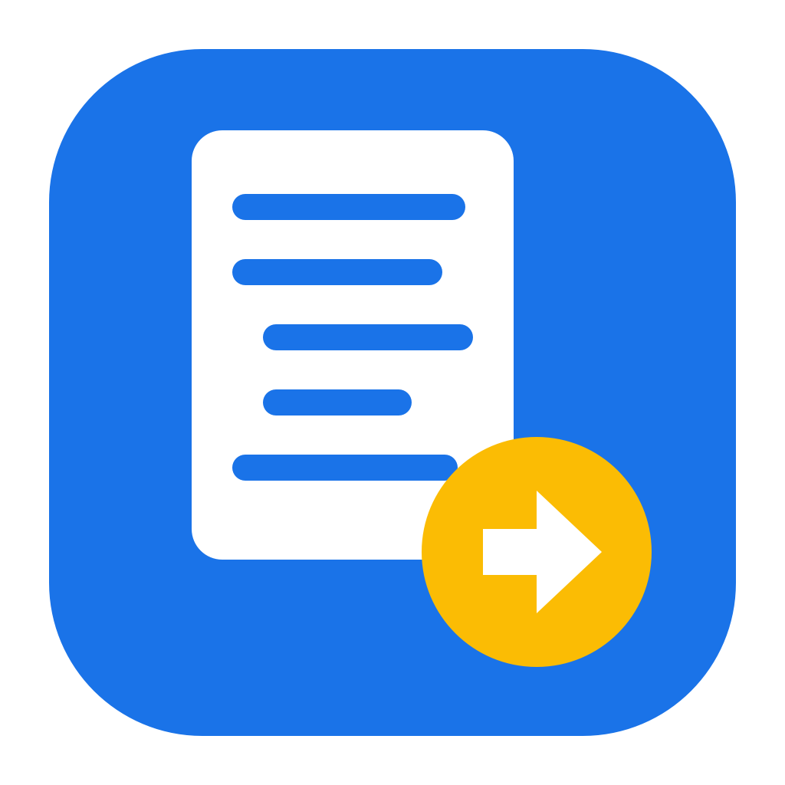

Notes to Google Docs
A small personal desktop app that copies study notes from PDFs into a Google Doc, keeping headings, numbering, bullets and formatting intact.
What it does: you open a PDF (lecture slides, a reading list…), tick the parts you want, paste a link to one of your Google Docs, and the app adds the content to that doc using the doc's own heading and text styles.
Where it runs: entirely on your own computer. It talks only to Google, using your own Google sign-in.